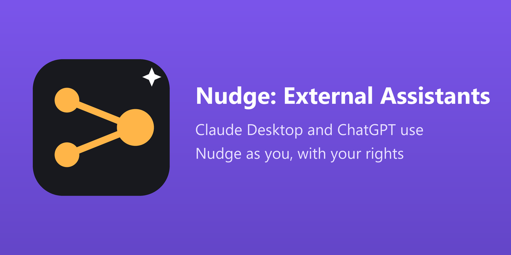

Each person makes a key of their own. The assistant sees only what that person may see, in the companies they work in, under the record rules they obey. Take the person out of the group and the key stops at once.
Writing is a separate switch, off by default, per company. A change comes back as a token and the lines that will change; you are asked in Odoo, and the change is made only when the assistant confirms with the token after you approved it there.
Every call lands in the Requests and the Changes of Nudge, marked with the name of the assistant, with its duration and outcome. The log is written by Nudge only.
Records of any app, the fields of the models, the screens and menus, the documentation of Odoo and your company files as resources. Ask: "Which invoices of Raghad are overdue?"
Create a record, change fields, press a button, each one shown before it is made. Ask: "Create a contact for Ebrahim, then show me what you will write."
The tools for developers (code, SQL, automations, views) are never offered.